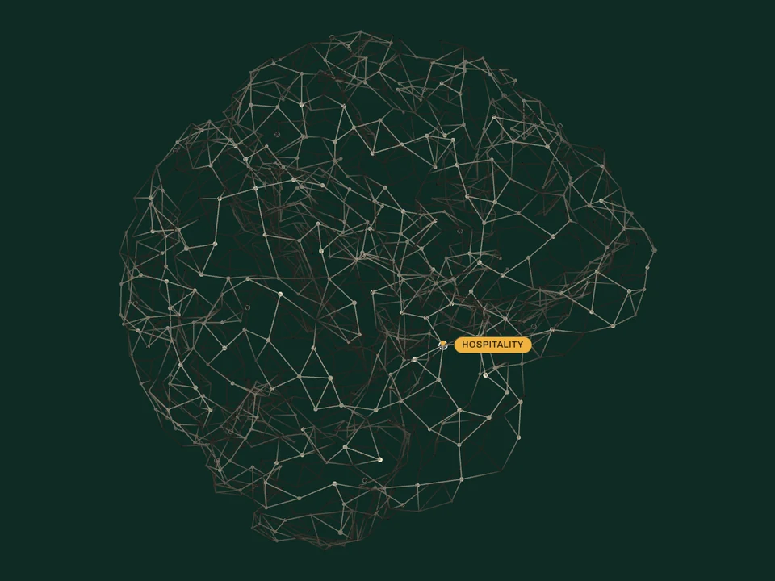
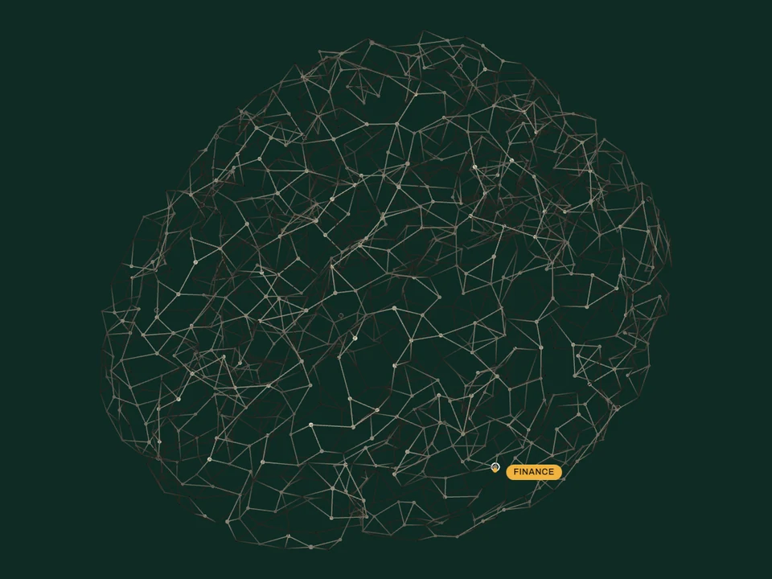
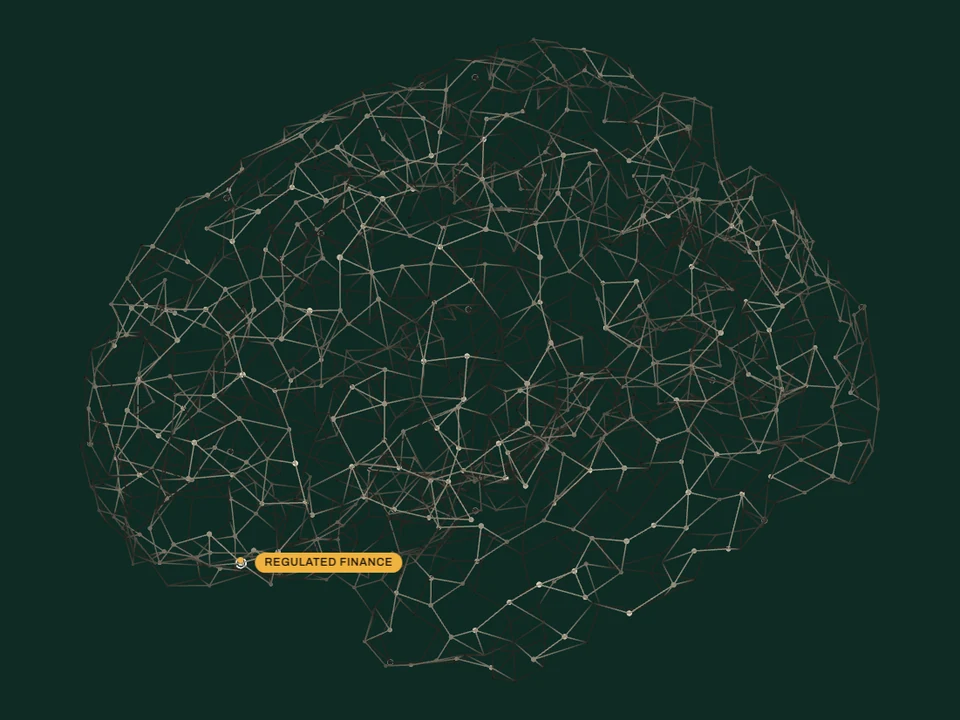

AI systemsthat keep runningafter we leave.
Forecasts, reconciliations, and an assistant that answers from your own files. For Singapore companies whose numbers live in Excel and whose decisions live in an inbox. Every offering is a name on the brain. Drag it.
Every forecast in the company lives in a spreadsheet. It's ready on Thursday. The decision was Monday.
Forecasting
Two people spend the first three hours of every day moving numbers between two systems you already own.
Automation
The answer is in a document from 2021, and the person who knows which one has left.
Company Brain
You bought an AI pilot last year. It demos beautifully. Nobody on the floor uses it.
AI Optimisation
The system nobody dares touch is the one the whole business runs on. The vendor who built it is gone.
IT Transformation
The plan needs three senior engineers. The budget carries one.
Top AI Talent
The regulator asked for the evidence, and your team spent three weeks assembling what should already have existed.
AI Governance
Advise
AI Consultancy
A two-week plan for where AI pays off first
Read
Advise: Where AI and IT spend pays off, and whether what you have is worth keeping
Two weeks that end with a ranked list of where AI pays off in your business, and what each item costs to build and to run. We interview the people who do the work, read the data you already have, and write one page per candidate: the workflow it changes, the data it needs, the price. Where an off-the-shelf tool is good enough, the list says so and names it. You keep the document whether or not you build anything with us.
Build
Forecasting
Demand, occupancy, and cash forecasts you can act on
Read
Build: Systems that run on a schedule inside your own accounts
Occupancy, covers, demand, cash: most teams forecast these in a spreadsheet by feel, and the spreadsheet is usually not wrong, just late. We build a model on your own history, backtest it walk-forward against what your team actually forecast on the same dates, and run it in parallel before anyone relies on it. It lands every morning where the team already looks, with an interval on every number. The 13-week cash forecast from a Xero ledger, every figure drilling to its source rows, is the first of these we productised.
Run
Top AI Talent
Senior engineers and analysts at a competitive price, managed from Singapore
Read
Run: Monthly capacity: our people in your tools, our pager on your systems
When the plan needs more hands than a project gives you, we supply them. Senior AI engineers, software engineers, data analysts, and back-office operators, hired and managed by us, working inside your tools and your hours, at a price a mid-market budget can carry. You get named people, not a bench: a Singapore lead who is accountable, a two-week trial on real work before any commitment, and the same runbook discipline as our builds. Scale from one person to a team, monthly, and stop when the work stops.
Regulate
Model Validation
Your model rebuilt and diffed; a named validator signs the report
Read
Regulate: For CROs and Heads of Compliance under MAS. A named person signs
Independent checking of the models a financial institution already runs: credit, pricing, capital, forecasting, and the AI ones. We rebuild the model ourselves and compare our outputs against yours, review the documentation against a standard test battery, and issue a signed validation report with a remediation plan. Every finding points at evidence, a test result or a document line, so a reviewer can check it without trusting us. A named validator signs, with the credentials the regulator will ask about. Sold per model, to the Head of Model Risk or the CRO.
Build
Automation
Repeated manual work, moved into software
Read
Build: Systems that run on a schedule inside your own accounts
The work that eats a team's week is usually the same twenty tasks: copying between systems, chasing approvals, building the same report, triaging the same inbox. We shadow the team for two days and count the hours rather than ask for them. Then we take the three tasks with the most hours and the least judgement, and move them into software that runs in your own cloud account. Anything that touches money or a customer still waits for a person to approve.
Grow
Business Development
Pipeline, partnerships, and the systems that keep them moving
Read
Grow: The commercial side: pipeline and introductions, on retainer
Growth usually stalls for a boring reason: leads sit in an inbox, follow-ups depend on one person's memory, and nobody can say which channel actually pays. Business development is the commercial side of what we build. A pipeline your team can see. Outreach and follow-up on a schedule, with a named person approving every send. Partner and channel introductions from our own network in Singapore and the region. And a monthly number that says what each channel returned. We work on retainer, and the pipeline is yours.
Build
Company Brain
Your documents, answered by one internal assistant
Read
Build: Systems that run on a schedule inside your own accounts
The answer to most internal questions exists in a document someone wrote years ago, and the person who knows where it is has left or is on leave. A company brain is one assistant inside your own systems that answers from your documents, respects who may see what, and shows its source every time. Accuracy is measured on a question set your team writes, before rollout and every month after. It reads your wiki; it does not replace it.
Regulate
Compliance Operations
The compliance calendar, the filings, and the evidence, for MAS-licensed firms
Read
Regulate: For CROs and Heads of Compliance under MAS. A named person signs
An outsourced compliance function for payment institutions and digital-asset firms that hold a MAS licence. We hold the compliance calendar and file on time. We write and maintain the manuals, and keep the evidence behind every obligation. When MAS publishes, we tell you what it means for your licence specifically. We read each publication once and know which of our clients it binds; everyone else reads it again, by hand, for every client. Your own MLRO stays the accountable officer; a named compliance lead of ours signs the work. Sold by introduction while the practice is small.
Pilot. The first engagement funds the build.
Advise
IT Transformation
From spreadsheets and legacy systems to a stack your team can run
Read
Advise: Where AI and IT spend pays off, and whether what you have is worth keeping
Most mid-market companies run on a legacy system nobody dares touch, a dozen spreadsheets, and three SaaS tools that do not talk to each other. IT transformation is the plan and the migration: which systems stay, which go, what replaces them, and in what order, so the business keeps running while it changes. We map the data first, move one process at a time, and leave every system documented, integrated, and owned by your own people rather than by us.
Regulate
AI Governance
Your AI controls evidenced continuously, not once a year
Read
Regulate: For CROs and Heads of Compliance under MAS. A named person signs
Most firms review their AI controls once a year and assemble the evidence in a three-week scramble when the regulator asks. We map every AI system you run to the controls a regulator expects of it. Then we collect the proof that each control is working, and keep it in a pack that is current on any day it is asked for. It ships as code and scheduled checks in your own repository, not as a platform you rent, and it is refreshed under managed operations. The evidence exists on the day it is asked for. Sold to the CRO or Head of Model Risk.
Run
Managed Operations
We keep running what we built, for as long as you want
Read
Run: Monthly capacity: our people in your tools, our pager on your systems
Every system we hand over is designed to run without us. Some teams would rather it ran with us anyway. Managed operations is a monthly line. We watch the forecasts and retrain the models on schedule. We refresh the governance evidence. We answer the pager when an automation stops at two in the morning, and send a one-page report of what ran and what broke. The runbook stays yours, the source stays yours, and the arrangement ends the month you say so.
Build
Custom Software
The dashboard, integration, or internal tool nobody sells
Read
Build: Systems that run on a schedule inside your own accounts
Not every problem needs a model. Sometimes the job is a dashboard that reads three systems at once. Or an integration between the PMS and the accounting software. Or an internal tool for the one process your SaaS cannot do. We build that plain software with the same squad and the same rules as everything else: in your accounts, with a runbook, with the source in your repository. Where a model is the cheapest way through one messy step, it goes in; where it is not, it stays out.
Regulate
Suitability Screening
Every advisor conversation screened against your suitability rules
Read
Regulate: For CROs and Heads of Compliance under MAS. A named person signs
Today a firm hand-checks a small random sample of advisor conversations and never listens to the rest. We screen every recorded conversation against the firm's own suitability rules. The conduct team gets a short queue of flagged cases, each cued to the moment that triggered the flag. People spend their time only on what was flagged, and the sample becomes the whole population. Priced per advisor, sold to the Head of Compliance or Head of Conduct at an insurer, bank, or advisory firm. A pilot: the first engagement funds the speech pipeline and the PDPA handling.
Pilot. The first engagement funds the build.
Advise
AI Optimisation
Your existing AI pilot, faster and cheaper to run
Read
Advise: Where AI and IT spend pays off, and whether what you have is worth keeping
A pilot that works in a demo and is slow, expensive, or flaky in daily use is the most common thing we are asked to fix. We measure the system you already run on real traffic first: latency, cost per request, failure rate. Then we change a copy, measure again, and keep only what helps: smaller models where accuracy allows, caching, batching, prompt and retrieval fixes. You get the numbers before and after, and an evaluation set your team can rerun without us.

Hospitality Practice
Systems for hotels, F&B, and travel operators
Occupancy moves daily, margins are thin, and the front office runs on a PMS, a channel manager, and a WhatsApp group. Our hospitality practice starts from those systems, not from a blank page. A covers and occupancy forecast per outlet, every morning. Guest and supplier email triaged for the front office to approve. The staff handbook and brand standards answered in one place. A rate or upsell model reviewed on real bookings before anyone trusts it.
Forecasting · Automation · Company Brain · AI Optimisation · AI Consultancy

Finance Practice
For the CFO's office: the close, the cash forecast, the reporting pack
The close, the cash forecast, and the reporting pack take the same week every month. Our finance practice starts from those three, for the CFO and the finance lead of a mid-market company or a fund. A thirteen-week cash forecast with intervals, from your ledger and your receivables ageing. Invoice and bank-line matching, prepared for a person to review. Policies and past board packs answered with their sources. A document-extraction pilot measured, then made cheaper to run. Data stays in your accounts, and the contract says so.
Forecasting · Automation · Company Brain · AI Optimisation · AI Consultancy

Regulated Finance Practice
Banks, insurers, and MAS-licensed fintechs: the door for the CRO and the MLRO
A regulated institution buys differently: vendor due diligence, MAS outsourcing rules, a named person on every deliverable, and a sales cycle measured in quarters. Our regulated finance practice is the door for the Chief Risk Officer, the Head of Model Risk, and the MLRO. Behind it sit four offers: independent model validation, continuous AI governance evidence, an outsourced compliance function for licensed fintechs, and suitability screening of advisor conversations. Each arrives with evidence a reviewer can check without trusting us, and each is signed by a named person.
Model Validation · Compliance Operations · AI Governance · Suitability Screening
Built for the Singapore mid-market.
Twenty to five hundred people. A property management system or a Xero ledger, and a great deal of email. No data team, and no appetite for a two-year programme. That is not a market we picked. It is the constraint we build around. So the work runs in cloud accounts you already pay for. The first thing we ship is small enough to stop. And the runbook is written for whoever is on shift when it breaks at two in the morning.
- It runs in your accountsYour cloud, your repository, your data. We don't rent you a platform, and we don't hold your data hostage at renewal time.
- Stop whenever you likeScope call, discovery, build, handover. Each one ends in something you own. None of them needs the next one to have been worth the money.
- Your people run it, not oursSource, runbook, and a support line for the first month. If your team can't run it without us a year later, we built the wrong thing.
Four steps, and you can stop after any of them.
- Scope callOne call
- DiscoveryA plan and a price
- BuildYou can stop at any demo
- HandoverSource, runbook, support line
Most AI work dies at handover.
The consultants leave on a Friday. Six months later the thing has quietly stopped being maintained, because nobody inside the company can read it and nobody was ever meant to. That's the failure this practice is built against. The measure of a job here isn't the demo at the end of the build. It's whether the thing is still running a year later, run by your own people, without us.
- The sourceIn your repository, under your licence, with the commit history intact.
- The runbookHow it runs, what breaks, what to check on a Monday morning. Written for your team, not for ours.
- The first monthA support line while your people take it over. Then it's yours, and the invoice stops.
Tell us the problem. We'll tell you which of the fourteen it is.
Twenty minutes, and it ends in one of three things: a yes, a no, or the name of someone better suited than us.